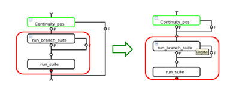
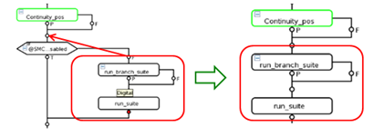
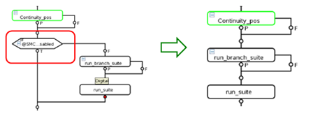
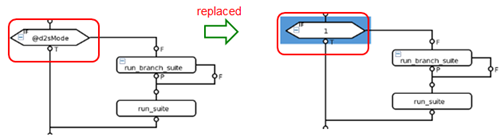

Check warning/error of flow execution
Lets you highlight the warnings, errors and other messages from the flow execution, check the "test number conflict", or "invalid test number" on executed tests from datalog (EDL).
As default messages, below messages can be highlighted:
- There are pins with vectors running at undefined speed.
- FLSH - No core function specified.
- In constant current mode.
- ERROR.
- Error.
- Exception.
- Bin to otherwise bin.
To add other messages, see rule file for flow execution in preference page.
You can select one or more of the following flow executions for the check:
- Normal flow execution.
- Full coverage flow execution.
- Conditional flow execution.
Normal flow execution
Normal flow execution runs the loaded test programs without any modification on the user’s test flow. The tool only checks and reports the risks on the executed tests.
Full coverage flow execution
Full coverage execution runs the loaded test program with a new testflow file which is generated by the tool. In the new testflow file, remove all of the branches and put their test suites into the main branch as shown below, unless you set an ignore condition in the rule file:
- If there are test suites in pass branch:

- If there are test suites in fail branch:

- Remove any other nodes except run, run_and_branch and assign a value:

Conditional flow execution
Conditional flow execution runs the loaded test program with a new testflow file which is generated by the tool. In the new test flow file, replace the variables name with the value which is specified in the rule file. See this example:

Functional changes
- Introduced in SmarTest 7.3.3